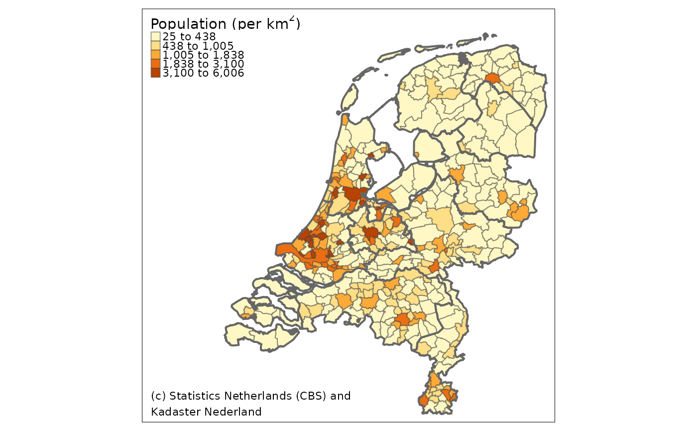

Creates a text annotation that could be used for credits or acknowledgements.
tm_credits(
text,
size = 0.7,
col = NA,
alpha = NA,
align = "left",
bg.color = NA,
bg.alpha = NA,
fontface = NA,
fontfamily = NA,
position = NA,
width = NA,
just = NA
)text. Multiple lines can be created with the line break symbol "\n". Facets can have different texts: in that case a vector of characters is required. Use "" to omit the credits for specific facets.
relative text size
color of the text. By default equal to the argument attr.color of tm_layout.
transparency number between 0 (totally transparent) and 1 (not transparent). By default, the alpha value of col is used (normally 1).
horizontal alignment: "left" (default), "center", or "right". Only applicable if text contains multiple lines
background color for the text
Transparency number between 0 (totally transparent) and 1 (not transparent). By default, the alpha value of the bg.color is used (normally 1).
font face of the text. By default, determined by the fontface argument of tm_layout.
font family of the text. By default, determined by the fontfamily argument of tm_layout.
position of the text. Vector of two values, specifying the x and y coordinates. Either this vector contains "left", "LEFT", "center", "right", or "RIGHT" for the first value and "top", "TOP", "center", "bottom", or "BOTTOM" for the second value, or this vector contains two numeric values between 0 and 1 that specifies the x and y value of the center of the text. The uppercase values correspond to the position without margins (so tighter to the frame). The default value is controlled by the argument "attr.position" of tm_layout.
the width of the credits text box, a numeric value that is relative to the map area (so 1 means the whole map width). By default (NA), it is determined by the width of the text. Tip: set bg.color to see the result.
Justification of the attribute relative to the point coordinates. The first value specifies horizontal and the second value vertical justification. Possible values are: "left" , "right", "center", "bottom", and "top". Numeric values of 0 specify left/bottom alignment and 1 right/top alignment. This option is only used, if position is specified by numeric coordinates. The default value is controlled by the argument "attr.just" of tm_layout.
current.mode <- tmap_mode("plot")
#> tmap mode set to plotting
data(NLD_muni, NLD_prov)
tm_shape(NLD_muni) +
tm_fill(col="population", convert2density=TRUE,
style="kmeans", title = expression("Population (per " * km^2 * ")")) +
tm_borders("grey25", alpha=.5) +
tm_shape(NLD_prov) +
tm_borders("grey40", lwd=2) +
tm_format("NLD", bg.color="white", frame = TRUE) +
tm_credits("(c) Statistics Netherlands (CBS) and\nKadaster Nederland", position=c("left", "bottom"))
#> old-style crs object detected; please recreate object with a recent sf::st_crs()
#> old-style crs object detected; please recreate object with a recent sf::st_crs()
#> old-style crs object detected; please recreate object with a recent sf::st_crs()
#> old-style crs object detected; please recreate object with a recent sf::st_crs()
#> old-style crs object detected; please recreate object with a recent sf::st_crs()
#> old-style crs object detected; please recreate object with a recent sf::st_crs()
#> old-style crs object detected; please recreate object with a recent sf::st_crs()
#> old-style crs object detected; please recreate object with a recent sf::st_crs()

# restore current mode
tmap_mode(current.mode)
#> tmap mode set to plotting